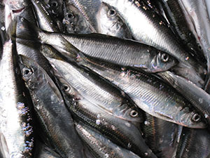
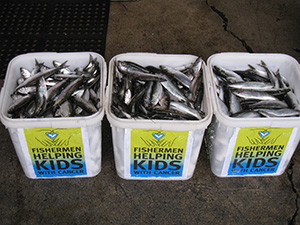
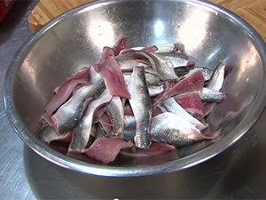

Helping kids in the fight of their lives
Our only goal is to raise money to help kids with cancer. Our founding principle is that 100%
of the money must be spent on kids who are being treated for cancer at BC Children's Hospital.

British Columbia Herring. Nature's perfect food.
WILD AND FRESH
Pacific herring are beautiful fin fish with bluish green colouration on their backs and shiny silver sides and bellies. They average 18 cm (7 inches) long and 110 g (1/4 lb).
Once caught, the herring are loaded into the hold of the seiner which contains clear ocean water, salt and ice. The herring is kept a degree or two above freezing for the twelve hour journey to Steveston. The herring sold at our event are between 24 and 48 hours old - fresh and perfect for eating.
A SUSTAINABLE FISHERY
British Columbia herring stocks are generally in good shape and the stocks off the east coast of Vancouver Island where we catch the fish for our event are in excellent shape.
In 2012/13, the B.C. herring stock was forecast to be 152,000 tonnes of which 20% was allocated to food, commercial, aboriginal and sport fishermen.
Approximately 60 tonnes will be harvested for our event. See Ocean Ecology or the Department of Fisheries herring management plan to learn more about herring.
RECIPES
Pacific herring have soft, off-white flesh with high oil content which offers a wonderful full flavour and lends itself perfectly to many preparations including pickling, smoking, canning and salting. Some of our favourites recipes include:
“A lot of the crowd were surprised to see how great the herring tastes, but when the product is this fresh - it's so good, it's not fishy, it's full of flavour and really good for you too."
Quang Dang, Chef, West Restaurant, Vancouver, BC